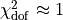
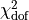
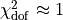
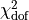

Evaluating a model fit with chi-square¶
Figure 4.1.
The use of the  statistic for evaluating the goodness of fit.
The data here are a series of observations of the luminosity of a star, with
known error bars. Our model assumes that the brightness of the star does not
vary; that is, all the scatter in the data is due to measurement error.
 indicates that the model fits the data
well (upper-left panel).  much smaller than 1
(upper-right panel) is an indication that the errors are overestimated.
much larger than 1 is an indication either that the
errors are underestimated (lower-left panel) or that the model is not a good
description of the data (lower-right panel). In this last case, it is clear
from the data that the star’s luminosity is varying with time: this situation
is be treated more fully in chapter 10.
statistic for evaluating the goodness of fit.
The data here are a series of observations of the luminosity of a star, with
known error bars. Our model assumes that the brightness of the star does not
vary; that is, all the scatter in the data is due to measurement error.
 indicates that the model fits the data
well (upper-left panel).  much smaller than 1
(upper-right panel) is an indication that the errors are overestimated.
much larger than 1 is an indication either that the
errors are underestimated (lower-left panel) or that the model is not a good
description of the data (lower-right panel). In this last case, it is clear
from the data that the star’s luminosity is varying with time: this situation
is be treated more fully in chapter 10.

# Author: Jake VanderPlas
# License: BSD
# The figure produced by this code is published in the textbook
# "Statistics, Data Mining, and Machine Learning in Astronomy" (2013)
# For more information, see http://astroML.github.com
# To report a bug or issue, use the following forum:
# https://groups.google.com/forum/#!forum/astroml-general
import numpy as np
from scipy import stats
from matplotlib import pyplot as plt
#----------------------------------------------------------------------
# This function adjusts matplotlib settings for a uniform feel in the textbook.
# Note that with usetex=True, fonts are rendered with LaTeX. This may
# result in an error if LaTeX is not installed on your system. In that case,
# you can set usetex to False.
if "setup_text_plots" not in globals():
from astroML.plotting import setup_text_plots
setup_text_plots(fontsize=8, usetex=True)
#------------------------------------------------------------
# Generate Dataset
np.random.seed(1)
N = 50
L0 = 10
dL = 0.2
t = np.linspace(0, 1, N)
L_obs = np.random.normal(L0, dL, N)
#------------------------------------------------------------
# Plot the results
fig = plt.figure(figsize=(5, 5))
fig.subplots_adjust(left=0.1, right=0.95, wspace=0.05,
bottom=0.1, top=0.95, hspace=0.05)
y_vals = [L_obs, L_obs, L_obs, L_obs + 0.5 - t ** 2]
y_errs = [dL, dL * 2, dL / 2, dL]
titles = ['correct errors',
'overestimated errors',
'underestimated errors',
'incorrect model']
for i in range(4):
ax = fig.add_subplot(2, 2, 1 + i, xticks=[])
# compute the mean and the chi^2/dof
mu = np.mean(y_vals[i])
z = (y_vals[i] - mu) / y_errs[i]
chi2 = np.sum(z ** 2)
chi2dof = chi2 / (N - 1)
# compute the standard deviations of chi^2/dof
sigma = np.sqrt(2. / (N - 1))
nsig = (chi2dof - 1) / sigma
# plot the points with errorbars
ax.errorbar(t, y_vals[i], y_errs[i], fmt='.k', ecolor='gray', lw=1)
ax.plot([-0.1, 1.3], [L0, L0], ':k', lw=1)
# Add labels and text
ax.text(0.95, 0.95, titles[i], ha='right', va='top',
transform=ax.transAxes,
bbox=dict(boxstyle='round', fc='w', ec='k'))
ax.text(0.02, 0.02, r'$\hat{\mu} = %.2f$' % mu, ha='left', va='bottom',
transform=ax.transAxes)
ax.text(0.98, 0.02,
r'$\chi^2_{\rm dof} = %.2f\, (%.2g\,\sigma)$' % (chi2dof, nsig),
ha='right', va='bottom', transform=ax.transAxes)
# set axis limits
ax.set_xlim(-0.05, 1.05)
ax.set_ylim(8.6, 11.4)
# set ticks and labels
ax.yaxis.set_major_locator(plt.MultipleLocator(1))
if i > 1:
ax.set_xlabel('observations')
if i % 2 == 0:
ax.set_ylabel('Luminosity')
else:
ax.yaxis.set_major_formatter(plt.NullFormatter())
plt.show()